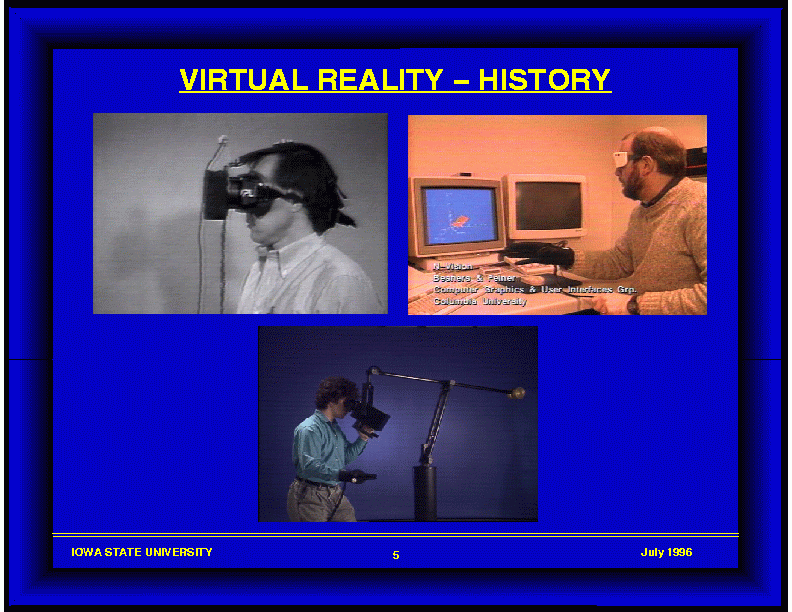

<H2>Lecture 2/05/98 - Slides:
VR Overview</H2>

<BR><BR>

<H3>VR History</H3>

<UL>
<TABLE BORDER=1 CELLSPACING=0 CELLPADDING=0 >
<TR ALIGN=CENTER VALIGN=CENTER>

<TD ALIGN=CENTER VALIGN=CENTER>

<CENTER><P><A HREF="2_05_01.gif">
</A></P></CENTER>
</TD>
</TR>

</TABLE>
</UL>

<BR>

<H3>VR Labs Mentioned in Brill (1996)</H3>

<ul>

<li> Michigan: Automobile industry
<BR>
<a href="http://www-name.engin.umich.edu:8001/vr/NEW/">
http://www-name.engin.umich.edu:8001/vr/NEW/</a> ???
<BR><BR>

<li> Iowa State: Multiple projects in C2 (a CAVE-like environment)
[more next week]
<BR>
<a href="http://www.icemt.iastate.edu">
http://www.icemt.iastate.edu</a>
<BR><BR>

<li> EVL: First CAVE, CAVE-to-CAVE communication
<BR>
<a href="http://www.evl.uic.edu/EVL/index.html">
http://www.evl.uic.edu/EVL/index.html</a>
<BR>
<a href="http://www.evl.uic.edu/EVL/VR/WORLD/">
http://www.evl.uic.edu/EVL/VR/WORLD/</a>
<BR><BR>

<li> SIMLAB: Robot training
<BR>
<a href="http://www.cfa.cmu.edu/vr">
http://www.cfa.cmu.edu/vr</a> ???
<BR><BR>

<li> Stanford: Responsive Workbench
<BR>
<a href="http://aperture.stanford.edu/">
http://aperture.stanford.edu/</a>
<BR>
<a href="http://www-graphics.stanford.edu/projects/RWB/">
http://www-graphics.stanford.edu/projects/RWB/</a>
<BR><BR>

<li> UNC: Immersive Users Interface (IUI) - part of
Human-Computer-Interaction (HCI)
<BR>
<a href="http://www.cs.unc.edu/~fuchs/">
http://www.cs.unc.edu/~fuchs/</a>

</ul>

